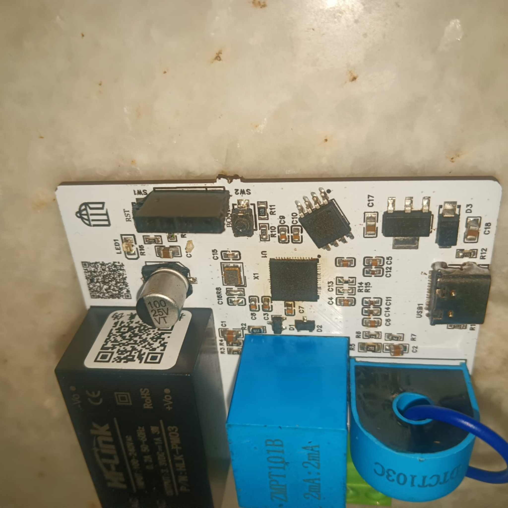
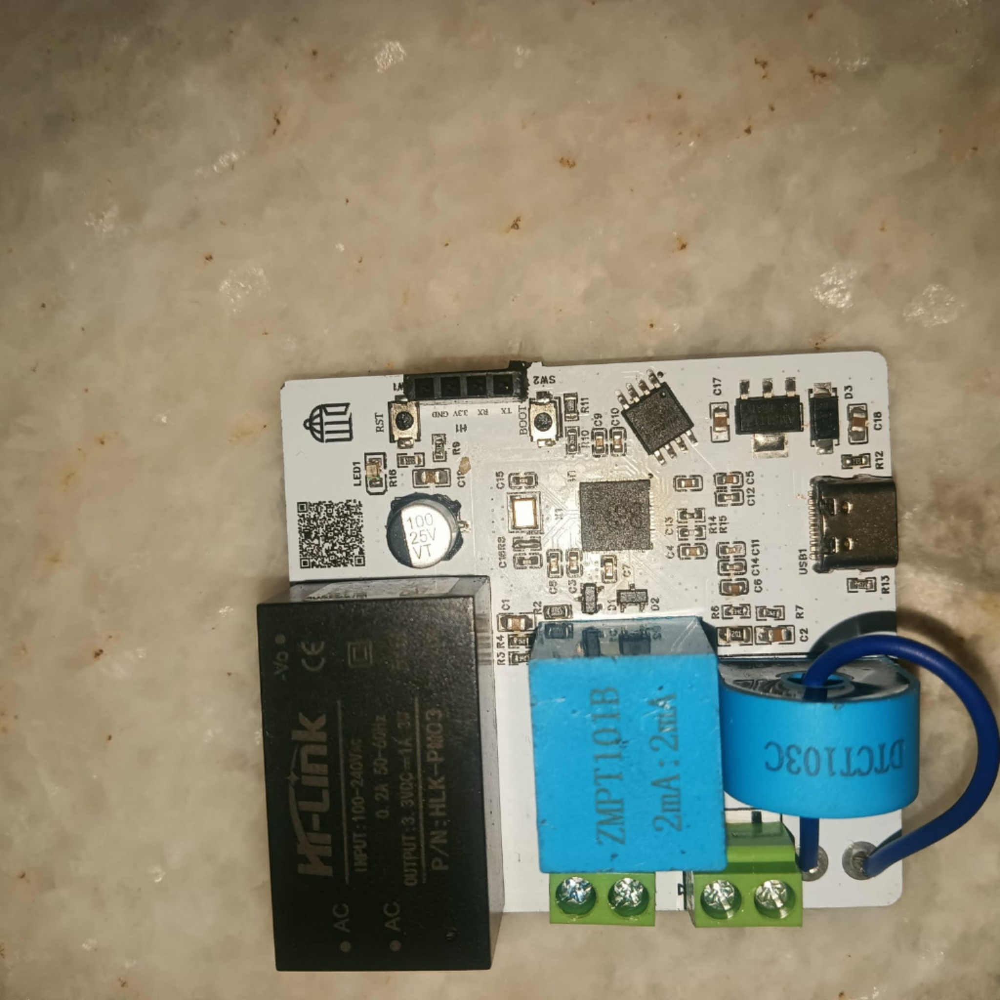
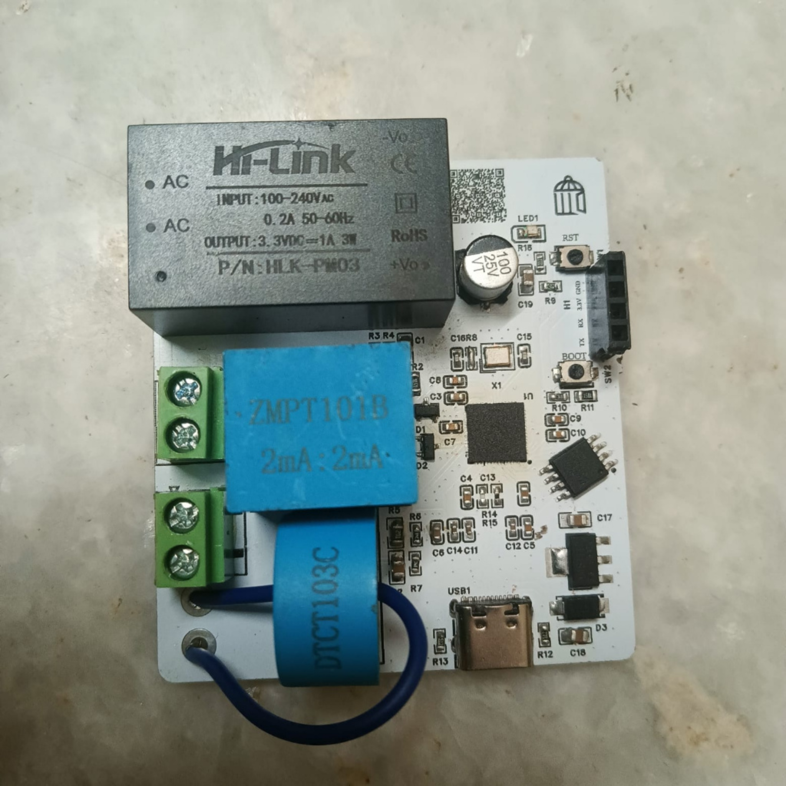
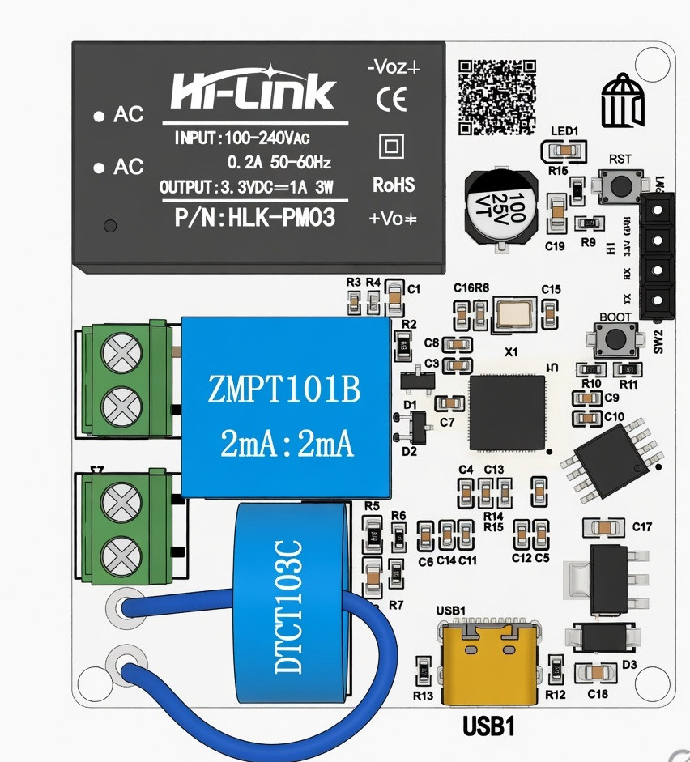
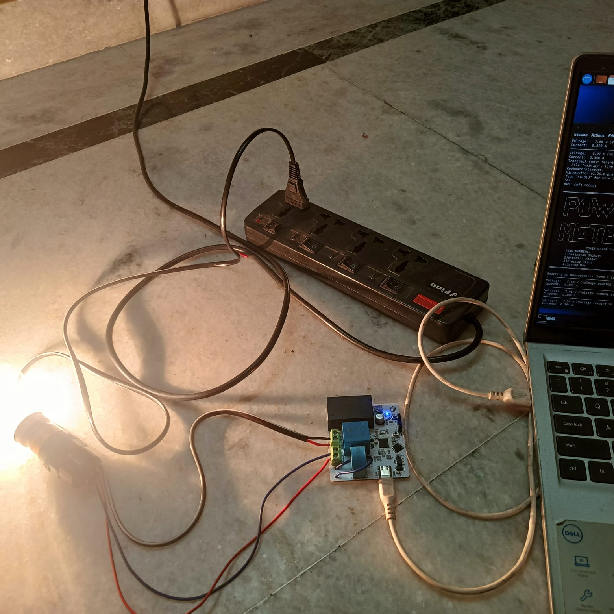
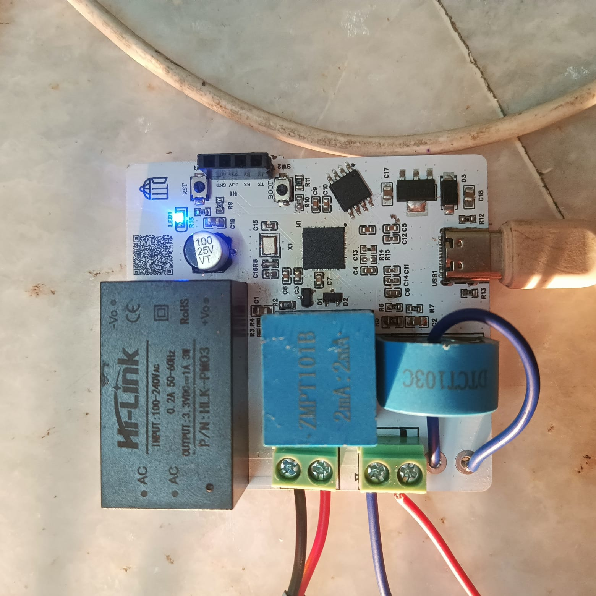

Jadavpur University
Department of Electrical Engineering
Repository:
https://github.com/dwan6767/UNIOPME
Raspberry Pi Pico · MicroPython · Open Source Hardware
The AC Power Meter V.0 is a low-cost, open-source hardware instrument for measuring AC electrical parameters, developed as an academic project at the Department of Electrical Engineering, Jadavpur University. It uses a Raspberry Pi Pico running MicroPython to sample current signals via the ZMCT103C sensor, then computes RMS current, line frequency, and Total Harmonic Distortion (THD) in real time. Results are output over the serial REPL at 500 ms intervals.
| Property | Value |
|---|---|
| Microcontroller | Raspberry Pi Pico (RP2040) |
| Firmware Language | MicroPython |
| ADC Resolution | 16-bit (0–3.3 V) |
| Sampling Rate | 5 kHz (500 samples per window) |
| Measured Quantities | IRMS, f, THD |
| License | CERN Open Hardware License v2.0 (CERN-OHL-P) |
| Repository | github.com/dwan6767/UNIOPME |
An alternating current waveform varies sinusoidally with time:
where Ipk is the peak current, f is the frequency (50 or 60 Hz for mains), and φ is the phase angle. The RMS (Root Mean Square) value is the equivalent DC current that would dissipate the same power in a resistive load:
For a pure sine wave, IRMS = Ipk / √2 . However, in practice the waveform contains harmonics, making direct digital sampling and numerical RMS computation necessary.
The Raspberry Pi Pico's ADC converts the continuous analogue signal into a discrete time series. The Nyquist-Shannon sampling theorem states that to faithfully reconstruct a signal, the sampling frequency fs must be at least twice the highest frequency component present:
This project samples at 5 kHz (Ts = 200 μs), allowing analysis of harmonics up to 2.5 kHz (the 50th harmonic of 50 Hz mains). A window of N = 500 samples captures 10 full cycles of a 50 Hz waveform, providing good frequency resolution (Δf = fs/N = 10 Hz).
The ADC output contains a DC bias due to the sensor's quiescent output voltage. The DC offset is estimated as the arithmetic mean of the sample window and subtracted from each sample:
For a discrete signal s[k] of length N, the RMS is:
This is exact for periodic signals when N spans an integer number of cycles and the sampling is uniform.
Zero-crossing detection measures the number of times the AC waveform crosses its mean (zero after offset removal) in the positive-going direction. For a window of N samples:
The frequency resolution improves with longer observation windows. A minimum of two crossings (≥1 full cycle) is required for a valid reading.
THD quantifies how much the waveform deviates from a pure sinusoid. It is defined as the ratio of the RMS of all harmonic components to the RMS of the fundamental:
where H1 is the fundamental amplitude and Hh are the harmonic amplitudes. This implementation uses a simplified DFT (often called the Goertzel algorithm) evaluating the complex Fourier coefficient at the fundamental frequency and at harmonics 2 through 10:
The 2/N scaling accounts for the fact that the DFT gives the full peak-to-peak amplitude when the frequency aligns exactly with a bin centre. Harmonics up to H10 are computed; higher-order contributions are typically negligible for mains waveforms.
| Component | Role | ADC Pin | Status |
|---|---|---|---|
| Raspberry Pi Pico | Microcontroller & ADC | — | OK |
| ZMPT101B | AC Voltage Sensor | GPIO 26 | Not connected (soldering defect) |
| ZMCT103C | AC Current Sensor | GPIO 27 | Functional |
The ZMPT101B is a PCB-mount voltage transformer based on a precision ZMPT101B micro voltage transformer. It provides galvanic isolation between the mains and the measurement circuit. The output is an AC voltage proportional to the input, biased at VCC/2 for single-supply ADC interfacing. Rated for up to 250 V RMS input with a transformation ratio of 1000:1000 (1:1).
The ZMCT103C is a precision current transformer with a built-in burden resistor. It outputs an AC voltage linearly proportional to the primary current. Typical sensitivity: 1 V per 5 A input. The output is biased at VCC/2 and directly readable by the Pico ADC. Used here for the current measurement channel (GPIO 27).
The full schematic and EasyEDA project are available in the
Designs/ directory:
Designs/schematic.pdf — Circuit schematicDesigns/rp.eprj — EasyEDA project fileDesigns/power.zip — Gerber fabrication files
3D-printable enclosure designs in PDF format are available under
Models/ (files 1_p.pdf and 2_p.pdf).
Renders of the assembled model are shown in the Gallery section.
ICAL.| Parameter | Value | Description |
|---|---|---|
| ICAL | 16.667 / 3 ≈ 5.556 | Current sensor sensitivity & burden scaling |
| SAMPLES | 500 | Samples per measurement window |
| SAMPLE_DELAY_US | 200 μs | Interval between successive samples |
| ADC_VREF | 3.3 V | ADC reference voltage |
| ADC_COUNTS | 65 535 | 16-bit ADC full-scale count (216 − 1) |
The complete firmware (Firmware/main.py, 99 lines):
import utime
import math
from machine import ADC, Pin
SAMPLES = 500
SAMPLE_DELAY_US = 200
ADC_VREF = 3.3
ADC_COUNTS = 65535
ICAL = 16.667 / 3
adc_i = ADC(Pin(27))
def print_header():
print(r"""
===============================================================
_____ ______ ________ _____
| __ \ / __ \ \ / / ____| __ \
| |__) | | | \ \ /\ / /| |__ | |__) |
| ___/| | | |\ \/ \/ / | __| | _ /
| | | |__| | \ /\ / | |____| | \ \
|_| \____/ \/ \/ |______|_| \_\
__ __ ______ _______ ______ _____
| \/ | ____|__ __| ____| __ \
| \ / | |__ | | | |__ | |__) |
| |\/| | __| | | | __| | _ /
| | | | |____ | | | |____| | \ \
|_| |_|______| |_| |______|_| \_\
POWER METER V.1
===============================================================
""")
def capture_samples():
raw_sum = 0
buffer = []
for _ in range(SAMPLES):
val = adc_i.read_u16()
buffer.append(val)
raw_sum += val
utime.sleep_us(SAMPLE_DELAY_US)
offset = raw_sum / SAMPLES
scaled = [(v - offset) * (ADC_VREF / ADC_COUNTS) * ICAL for v in buffer]
return scaled
def calc_rms(samples):
sum_sq = sum(s * s for s in samples)
return math.sqrt(sum_sq / len(samples))
def calc_frequency(samples):
crossings = 0
offset = sum(samples) / len(samples)
for k in range(1, len(samples)):
if (samples[k - 1] - offset) <= 0 and (samples[k] - offset) > 0:
crossings += 1
if crossings < 2:
return 0.0
sample_rate = 1_000_000 / SAMPLE_DELAY_US
return sample_rate * crossings / (SAMPLES - 1)
def calc_thd(samples):
N = len(samples)
fund_real = 0.0
fund_imag = 0.0
harm_power = 0.0
for n in range(N):
angle = 2 * math.pi * n / N
fund_real += samples[n] * math.cos(angle)
fund_imag += samples[n] * math.sin(angle)
fund_mag = 2 * math.sqrt(fund_real ** 2 + fund_imag ** 2) / N
for h in range(2, 11):
h_real = 0.0
h_imag = 0.0
for n in range(N):
angle = 2 * math.pi * h * n / N
h_real += samples[n] * math.cos(angle)
h_imag += samples[n] * math.sin(angle)
h_mag = 2 * math.sqrt(h_real ** 2 + h_imag ** 2) / N
harm_power += h_mag ** 2
return math.sqrt(harm_power) / fund_mag * 100 if fund_mag > 0 else 0.0
print_header()
utime.sleep(1)
print("Starting Current, Frequency & THD Measurements...")
while True:
try:
samples = capture_samples()
irms = calc_rms(samples)
freq = calc_frequency(samples)
thd = calc_thd(samples)
print("-" * 40)
print(f"Current: {irms:6.3f} A")
print(f"Freq: {freq:6.2f} Hz")
print(f"THD: {thd:6.2f} %")
utime.sleep_ms(500)
except Exception as e:
print(f"Error: {e}")
utime.sleep_ms(2000)
Let s[k] be the k-th sample after offset removal and scaling, representing instantaneous current in amperes. The RMS estimate over N samples is:
This formula is the discrete-time equivalent of the continuous RMS integral. With N = 500 and fs = 5 kHz, the window spans 100 ms, containing exactly 5 cycles of a 50 Hz (or 6 cycles of a 60 Hz) mains waveform, giving a stable reading.
After DC offset removal, the signal oscillates around zero. Each positive-going transition (sample k−1 ≤ 0 and sample k > 0) represents one half-cycle. The total number of zero crossings divided by the window duration gives the frequency. With N crossings counted over N samples at sample period Ts:
The denominator N−1 accounts for the number of intervals between N samples. The minimum detectable frequency is 2fs/N = 20 Hz (at 2 crossings), safely below the 50/60 Hz mains range.
The discrete Fourier transform (DFT) at bin h is:
The magnitude of the h-th harmonic is:
The factor 2/N converts from DFT magnitude to peak amplitude of the sinusoidal component (the DFT distributes the signal energy between positive and negative frequency bins). THD is then:
Only harmonics up to the 10th are evaluated. Since the sampling rate (5 kHz) can represent harmonics up to the 49th (2.45 kHz at 50 Hz fundamental), contributions from H11 through H49 are assumed negligible for typical mains loads — a common assumption in power quality measurements per IEC 61000-4-7.
A full N-point FFT requires O(N log N) operations, but computing only 10 specific frequency bins (fundamental + 9 harmonics) via the direct DFT (Goertzel) approach uses O(10N) operations. For N = 500, this is approximately 5000 multiply-adds per measurement cycle, easily within the RP2040's capabilities at 133 MHz.
| 3D Render (Front) | 3D Render (Rear) |
|---|---|
 |
 |
| 3D Render (Angled) | 2D Model |
 |
 |
| Test Setup | Test with load |
 |
 |
Hardware/ +-- Designs/ # Schematic (schematic.pdf) | +-- rp.eprj # EasyEDA project | +-- power.zip # Gerber files | +-- schematic.pdf +-- Docs/ | +-- AC_Power_Meter_Report.docx | +-- POWER METER-2.pdf +-- Firmware/ | +-- main.py # MicroPython source (99 lines) +-- Models/ # 3D renders, photos, enclosure PDFs | +-- 0.png | +-- 1.png / 1_p.pdf | +-- 2.png / 2_p.pdf | +-- 3.png | +-- 2d_model.jpeg | +-- test_setup.jpeg | +-- test_soft.jpeg | +-- test.jpeg +-- report.html # This file +-- README.md
This project is certified Open Source Hardware under the CERN Open Hardware License v2.0 (CERN-OHL-P).